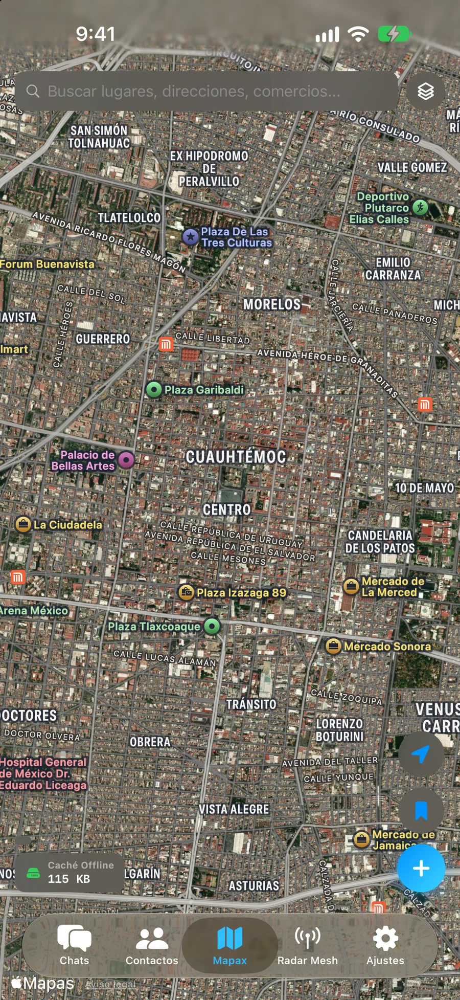
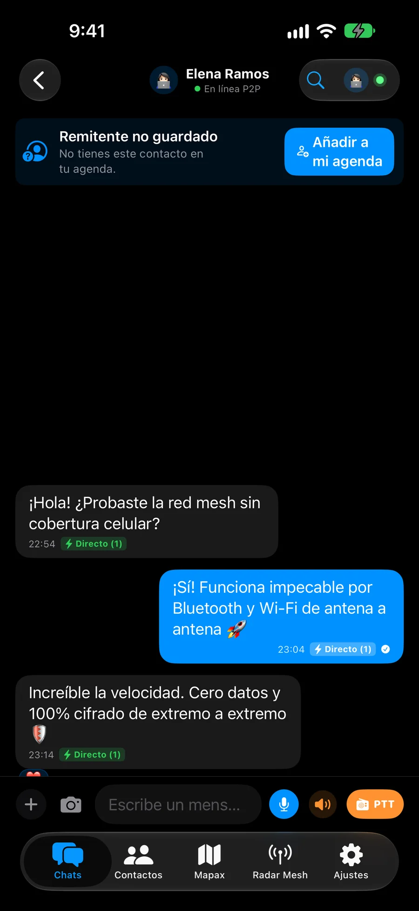
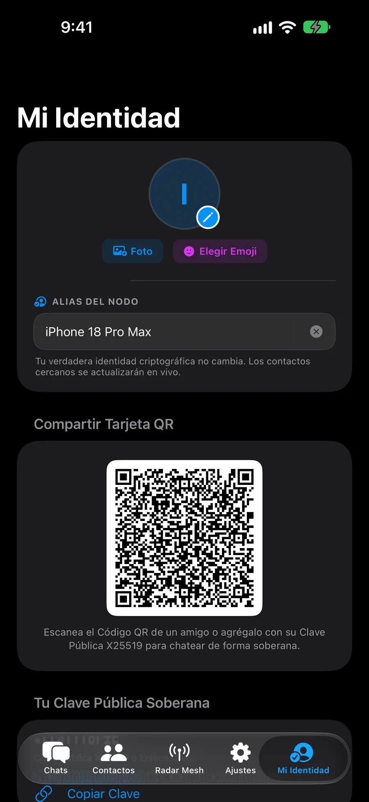
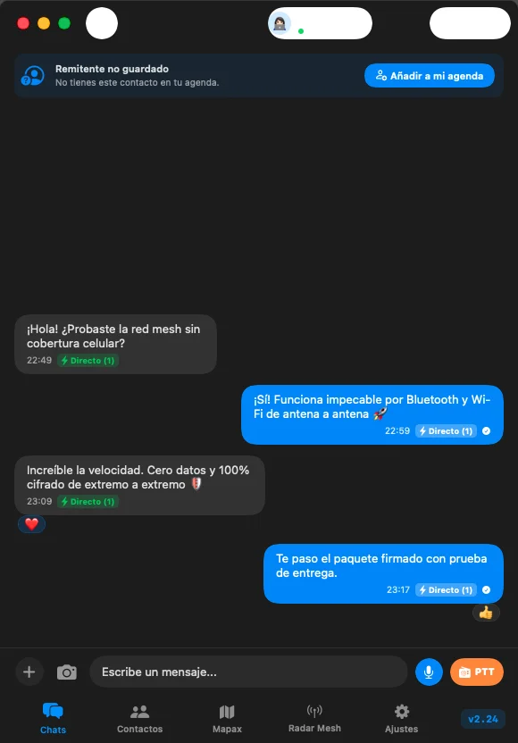
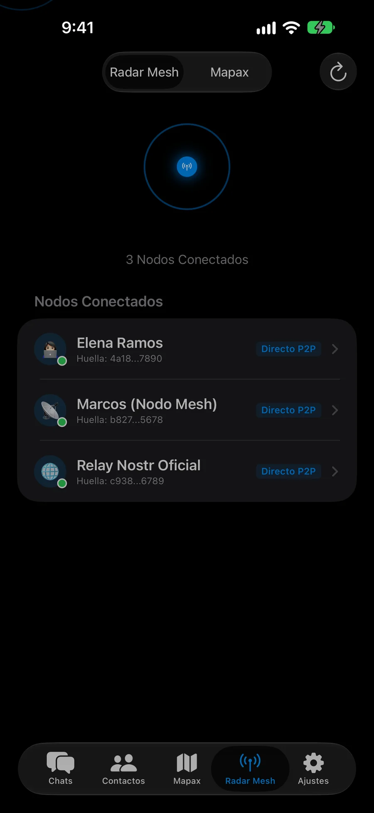

O app de mensagens para o seu dia a dia: fale ao vivo como em um walkie-talkie, compartilhe mapas que funcionam sem internet e crie grupos com amigos e família. Super rápido quando você tem sinal, e quando estiver num show lotado, viajando ou sem cobertura, continue se comunicando direto de celular para celular.
Ficou sem dados em viagem ou no meio da natureza? O Chax salva os mapas direto no seu celular para você sempre se orientar. Veja fotos de satélite ou ruas, a distância exata até seus amigos e o caminho percorrido, sem gastar dados móveis.

Esqueça gravar áudios longos e esperar o envio. Segure o botão e a outra pessoa te ouve ao vivo segundo a segundo. Em locais barulhentos ou quando você não puder ouvir, o Chax transcreve a voz para texto na sua tela na hora.

Crie suas figurinhas em um segundo: segure o dedo sobre uma pessoa ou objeto em qualquer foto da sua galeria e seu iPhone recorta automaticamente. Envie na hora para seus amigos, mesmo sem sinal celular no meio da natureza.
A maioria dos apps pede seu número de telefone ou e-mail para cadastrar e rastrear você. O Chax não pede nada disso. Sua conta é criada dentro do seu próprio aparelho: ninguém pode cancelá-la, ninguém sabe com quem você fala e ninguém vende seus dados.

Crie grupos com sua família, trabalho ou comunidade com o controle que você precisa: onde todos conversam ou apenas com avisos. Compartilhe stories que somem no dia seguinte, responda em privado dentro do grupo e use o Chax confortavelmente no seu Mac.

Você não precisa configurar nada nem entender de tecnologia. Com Wi-Fi ou dados, vai pela internet. Perto da outra pessoa, vai direto pelo ar. E se o sinal cair na região toda, viaja pulando de celular para celular até chegar.

Veja passo a passo como sua mensagem chega ao destino: pulando entre celulares, conectando via alguém com sinal ou ajudando em emergências.
Sua mensagem viaja trancada com um cadeado digital que apenas seu amigo pode abrir. Nenhum celular pelo caminho consegue ver o que você escreveu ou saber quem você é.
Seu celular transmite pelo ar para os aparelhos ao redor.
Dois celulares próximos recebem o pacote e passam para a frente.
Esses celulares passam para outros quatro, cobrindo maior distância.
O celular do seu amigo reconhece a mensagem, abre e confirma a entrega ✓✓.
Se você quiser falar com alguém em outra cidade enquanto está no metrô ou num show sem dados, basta que uma única pessoa próxima tenha sinal para sua mensagem alcançar a internet com segurança.
Sua mensagem viaja pelo ar procurando alguém por perto.
O celular dele recebe a mensagem lacrada e envia para a internet sem poder ler o conteúdo.
Em milissegundos seu amigo recebe a mensagem em qualquer país.
Quando um terremoto ou apagão derruba as antenas da cidade, os celulares dos vizinhos se conectam entre si criando uma rede de socorro imediata sem fios e sem depender de operadoras.
As antenas param de funcionar e a internet cai em toda a região.
O Chax conecta os celulares dos vizinhos próximos de forma automática pelo ar.
Compartilhe sua localização ou envie avisos de "Estamos bem" para sua família sem sinal.
Se você salvou o mapa antes de sair, seu celular pode passá-lo para seus amigos pelo ar sem gastar internet. Você também vê por onde eles andaram para se encontrarem fácil no caminho.
Os mapas são salvos de forma limpa e limpam automaticamente áreas antigas não usadas.
Se faltar uma parte do mapa para seu amigo, seu aparelho transfere em segundos pelo ar.
Acompanhe o caminho recente dos amigos no mapa para ninguém se perder na trilha.
Momentos em que nenhum outro app de mensagens funciona porque as antenas normais falham.
Você foi buscar bebidas. Na volta, a multidão é infinita. Seu celular mostra: "Sem Serviço" ou sinal cheio com WhatsApp travado no reloginho ⏱️. Você está completamente incomunicável.
A Solução Chax: Sua mensagem não depende de uma antena distante sobrecarregada. Ela pula em milissegundos de celular em celular entre quem está perto usando Bluetooth seguro.
Você saiu para uma trilha ou pedal com amigos. Uma bifurcação ou névoa repentina separa o grupo. Nenhuma antena de celular por dezenas de quilômetros. Como saber para onde ir ou se alguém se machucou?
A Solução Chax: Abra seu mapa offline. O Chax detecta os celulares dos seus amigos pelo ar, mostra a distância exata, a direção para caminhar e permite falar por Walkie-Talkie ao vivo sem gastar dados nem comprar equipamentos caros.
Os apps comuns exigem seu número de telefone privado, enviam todos os seus contatos para computadores deles e analisam seus dados. Quando os servidores caem no mundo todo, meio planeta fica mudo.
A Solução Chax: Sua conta vive apenas no seu próprio celular. Ninguém pode te bloquear, ninguém pode derrubar sua conta e ninguém no caminho consegue ver o que você escreve.
Após um terremoto ou tempestade severa, os postes caem, as subestações entram em colapso e as baterias das antenas celulares se esgotam em minutos. Milhares ficam sem saber se a família está bem, enquanto o socorro fica sobrecarregado.
A Solução Chax: Seu celular vira um ponto de socorro autônomo e repetidor. Pelo Bluetooth de baixo consumo, sua mensagem com GPS no Mapax pula de casa em casa até encontrar sua família ou alcançar as equipes de resgate.
O Chax escolhe de forma automática o caminho mais rápido para entregar sua mensagem sem que você precise se preocupar:
Com Wi-Fi ou dados móveis, suas mensagens são entregues na hora em qualquer lugar do mundo sem depender de servidores centrais.
A menos de 100 metros do contato, a mensagem viaja direto entre os aparelhos pelo ar sem gastar dados nem tocar na internet.
Se o sinal cair na região toda, a mensagem pula de forma invisível e protegida entre celulares próximos até chegar ao destino.
O Chax é super leve: descansa em repouso profundo e quase não ocupa espaço. Ao participar da rede, você empresta alguns poucos bytes imperceptíveis para ajudar as mensagens de outros a chegarem, e em troca todos ganhamos uma rede comunitária que nunca se apaga. Com a colaboração de cada um, ninguém fica incomunicável.
O Bluetooth de baixo consumo descansa em repouso profundo. Ajudar a repassar uma mensagem consome menos energia do que acender a tela por um segundo.
Você empresta uma linha invisível para a mensagem de alguém chegar. Todos na rede fazem exatamente o mesmo por você.
Em um show lotado, na trilha ou durante um apagão, não haverá como baixar. Instale agora e tenha o app pronto para quando for necessário.
O Chax resolve o caminho de forma 100% automática e invisível. Se a outra pessoa estiver perto, vai direto de celular para celular sem gastar dados nem servidores. Se estiver longe, vai pela Internet. E se o sinal cair, avança pulando entre celulares próximos. Você só envia; o Chax cuida do resto.
| Recurso | CHAX | Telegram | Signal | |
|---|---|---|---|---|
| Funciona sem conexão com a Internet? | ||||
| Exige número de telefone? | ||||
| Mapas completos sem internet | ||||
| Walkie-Talkie de voz ao vivo | ||||
| Resistência a Quedas Globais |
Criado com tecnologia nativa Swift para aproveitar ao máximo o hardware e antenas Bluetooth dos seus aparelhos Apple.
Disponível no TestFlight para iPhone, iPad e Mac.
Instalação direta sem lojas de apps. Compatível com Android 7+. Núcleo nativo em Rust ultrarrápido e Rede Mesh Bluetooth sem sinal.
Baixar APK (v1.046) →Criado para iPhone, iPad e Mac (v3.037). Walkie-Talkie ao vivo, mapas offline e mensagens diretas de celular para celular.
Instalar no TestFlight →App nativo e fluido para computadores. Converse com teclado completo e acompanhe seus grupos pelo computador.
Ver Instaladores para PC →Tudo o que você precisa saber sobre os recursos do Chax.
Não. O Chax funciona diretamente com as antenas Bluetooth e Wi-Fi já integradas no seu iPhone, iPad ou Mac. Sem rádios externos nem cabos adicionais.
O alcance direto entre dois aparelhos é de até 100 metros ao ar livre. Graças ao envio em múltiplos saltos, as mensagens pulam de celular em celular cobrindo quilômetros quando houver outros usuários por perto.
Pessoalmente, o jeito mais rápido é selecionar seu amigo no radar de pessoas próximas do Chax ou mostrar seu código QR para escanear em um segundo. À distância, compartilhe seu link de contato único (chax://...) ou conecte-se por meio de um amigo em comum na rede.
Sendo bem sincero, consome um pouquinho, mas é uma colaboração mútua de toda a comunidade. Deixando o Chax ativo, você empresta alguns poucos bytes para repassar as mensagens de quem está ao redor, e em troca, todo mundo faz o mesmo por você, garantindo cobertura quando você ficar sem sinal. Ele funciona com Bluetooth de baixo consumo para que o gasto seja mínimo, mas a segurança coletiva que você ganha não tem preço.